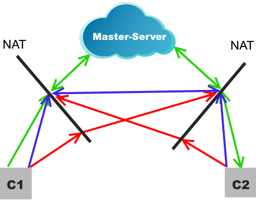
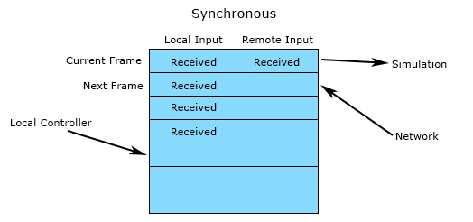
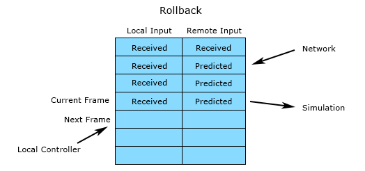

Networking
Nowadays online multiplayer in games is not a feature, but a requirement. Everyday gamers play numbers of hours, matches and sessions in their favourite games with friends and other people.
L2DF can be used with both host-clients and peer-to-peer multiplayer model.
For the last one we also provide you a bunch of tools to implement rollback based networking[1][2][3].
Also we want to note that we don't like (hate) lockstep networking and we'll skip it in this topic.
Network manager
As we discussed in previous topic L2DF has NetworkManager which you can use to easily enable multiplayer for your game.
It has various of methods which you can find and learn in its API reference. Most important one is NetworkManager:init since its your starting point in every multiplayer implementation. It does these two things:
- initializes local player's username adding "#xxxx" suffix to it, so other players can find you later with this username;
- initializes your socket[4] to connect masters and peers later.
To get generated username use NetworkManager:username method.
To init it again you can destroy old socket and other stuff with NetworkManager:destroy method.
On top of that L2DF uses lua-enet which is a part of LOVE framework.
Read more about that here for advanced networking use-cases.
Master-server
To implement online matchmaking and make finding of players possible L2DF uses master-servers.
It works as simple as it is:
Player connects to master and sends its username.
Master registers user, so now others can find him by username.
Player wants to find another player / his lobby and sends his username:
- if noone was found add this player to it's own lobby;
- if someone was found then join his lobby = connect to each user in the lobby (peer-to-peer);
- if everything is like in the previous variant, but current user is already connected to lobby then he should
leave lobby first = disconnect from all clients (internally master sends
FLUSHevent for doing that).
In lobby users can wait for other players or start game immediately - depends on your implementation / preset.
If somebody disconnects from master it will be removed from lobby BUT not from other peers. It's used to not overload master-servers and "localize" lobbies after game startups - so nobody else can connect after game starts.
If the last user in lobby disconnects master'll destroy this lobby.
We support multiple master-server at the same time so you can create "mirrors", "fallbacks", "public and private" and other types of masters - it's up to you how you will use this feature.
To add new master-server to your network's list NetworkManager:register method.
Host format is X.X.X.X:PORT where X is parts of master's public IP and PORT is master's port (default is 12565).
For debug purpose there're also L2DF_MASTER environment variable which you can use to add new master-server without
changing game's source code.
To connect all registered master-servers use NetworkManager:login.
Disconnect from them: NetworkManager:logout
Except connecting to master NetworkManager:login also attempts to get your public IP address (connects to google.com for that). It's used later to help setup connection between you and other players.
Connection protocol
For information about master-server's protocol read this page.
As we already stated L2DF is adapted to be used in p2p networking.
How it works in a perfect world:

But as you may know in real world most of the computers are located in local networks which use NAT. The case for that is limited amount of IPv4 addresses (a little bit bigger than 4 billions).
There're no problems with NAT if you connect to somebody publicly available in the network (no NAT or with NAT forwarding; NONAT below). But there're a big problem if somebody wants set connection with you first - it's impossible until you configure your NAT to forward some specific connections (sometimes it's not possible).
Okay, imagine the worst (to be fair it's "common") case scenario:
We have 2 computers under NAT (Wi-Fi, ISP, no matter what) and want to setup a connection.
Is it possible? - Yes! Sometimes :)
NAT has different implementation and some of them works together, some not.
Typical terms you can find about NAT: 1. full cone, 2. address-restricted, 3. port-restricted, 4. with hairpin, 5. no hairpin.
Okay, what are solutions?
NAT port forwarding / static routing: sometimes it's enough just to set correct routes on your router and you're done.
UDP holepunching [5]: L2DF implements this technique and it's why we're using master-server. This is perfect except one problem: if you have 2+3 NAT (see above) it's very hard to setup connection since for different addresses NAT uses different ports on same socket which leads to problems - we have to "predict" port and it's not very efficient. Some illustration on how it works:

Use IPv6: if both of the clients have IPv6 address it's possible to setup connection using it since most of the ISPs provides them as publicly available without problems. Currently we're not supporting it.
UPnP: if one the clients' router support this technology, you can use it to open needed ports and setup connection using it. May be implemented in L2DF in future.
Relay servers: it's how Steam, Unity and others networking works. Relay servers (or TURN servers) transfer traffic between clients as if they are connected together. We're going to implement this in future.
VPN: like previous one but more universal. It emulates "local network" so you can connect to anyone in these
Sounds a little bit complicated. And it is :)
Clients
For each connected player L2DF creates a Client instance which contains a references to connected peer and useful methods to communicate with it.
Client is a first argument in all event's callback functions.
You can get an iterator for all connected clients with NetworkManager:clients method and use it, e.g. like this:
for client in NetworkManager:clients() do print('Connected to', client:username()) end
Events and game protocol
To organize your communication between clients L2DF provides NetworkManager:event method.
This method registers network event that can be sent later with NetworkManager:broadcast and Client:send methods.
Simple usage:
NetworkManager:event('hello', 'Is', function (client, event, index, message) print('Hello', message, 'your index is', index, 'for that client.') end) -- ... local i = 1 local msg = 'from ' .. NetworkManager:username() for client in NetworkManager:clients() do client:send('hello', i, msg) i = i + 1 end
The above example can be simplified with NetworkManager:broadcast method since it also sends event with parameters to all connected clients.
NetworkManager:event's format argument (second) defines a package structure that would be sent across network.
All defined variables will be unpacked and passed to callback function after Client and enet's event references.
There're description of all available types for it:
"b" a signed char (1 byte).
"B" an unsigned char (1 byte).
"h" a signed short (2 bytes).
"H" an unsigned short (2 bytes).
"i" a signed int (4 bytes).
"I" an unsigned int (4 bytes).
"l" a signed long (8 bytes).
"L" an unsigned long (8 bytes).
"f" a float (4 bytes).
"d" a double (8 bytes).
"s" a zero-terminated string.
"cn" a sequence of exactly n chars corresponding to a single Lua string.
See more examples in LF2's preset.
**Please, note that all calls to NetworkManager:event should be declared in global scope or should always have the defined order of execution (no if statements that can differ on clients) since it defined your protocol! Changes made to it lead to changes of your protocol and game versions' netcode incompatibility.**
Rollbacks
How it works
Before getting into the implementation details, let’s review how rollback networking functions at a high-level.
Rollback networking an evolution of synchronous networking systems where every player would send input commands to every other player. The last ones are also known as "lockstep" systems. Little Fighter 2 is an example of the game which uses this type of networking. A deterministic game simulation in LF2 would advance one frame every time it had received commands from each peer. This architecture had numerous benefits, but one huge caveat that drove action games away from it: input latency. In order to allow time for receiving remote player input, the local input wouldn’t be injected into the simulation for a number of frames equal to the transfer speed.

Rollback fixes the latency issue by processing local inputs immediately while predicting the remote inputs. When the actual remote inputs arrive over the network, it checks if anything was mispredicted. If a misprediction was found, time will be rewound to the mispredicted frame and then simulated back to the present using the corrected input values and further predicted values. This rollback and correction process all happens in the span of a single frame such that user only sees a slight pop in the results.

As network latency increases, visual pops in motion will increase, but they will only be in relation to direct effects of remote player input. For example, the launching of a projectile might skip the first couple frames, but once the projectile is in flight it can be reacted to exactly as if it were in a local multiplayer game.
Rollback networking is designed to create a near zero latency experience for the local user and fair conflict resolution because every participant’s inputs are respected. When you move, you move right away. If you press a button on a specific frame to counter an attack, you will counter the attack. This architecture also creates a minimal overlap in which game and network code need to consider one another. When adding features to the game, there is almost zero concern about networking Everything just works and that’s a rather freeing experience for the engineer.
The main downsides of rollback are that it does not easily support joining in-progress matches, and it does not scale to large player counts. It also doesn’t support a variable frame rate simulation, but I’ll discuss how it can still support variable frame rate rendering later.
Rollback is perfect for fast, twitchy, frame-accurate games that require responsive input and have short gameplay rounds. It is the standard approach for modern fighting games and should be the standard approach for any quick round-based game with direct player interaction.
How to implement
SnapshotManager - provides you a transactional storage with commit / rollback support.
InputManager - saves 'timestamp' for all your inputs which is used internally to rollback with
SnapshotManager
Entity:sync - can be used in pair with SnapshotManager:stage to
persist entity's state for future rollbacks.
For more detailed information on implementation see LF2's preset.
Inputs
This section has not completed yet...
Desync
There're 3 variants depending on your chosen solution:
- Server-Client: if you implemented this type of networking there're no desync since all logic is processed on the server and your clients become just a readers of the game state from the server, cheating depends on the server (usually hard). Requires pretty good machine with publicly available IP to start and process multiple matches at the same time.
- Host-Client: no desync and delay on host and some delay on all clients, host can cheat easily.
- Peer-to-Peer: in this case you have at least three different models:
- simple sync of all objects: no delay for local player, easy to cheat, high bandwidth usage;
- lockstep simulation: desync depends on determinism, hard to cheat, high input lag, low bandwidth usage, the worst user experience;
- rollback networking: no delay for local player, cheating leads to desync, low bandwidth usage.
Now we want to cover only the last section about rollback netcode.
To avoid desync with this type of networking you should follow these requirements:
- Game simulation MUST be deterministic: same floating point operations on different machines, no random, no undefined behaviour, same game loops and order of execution with the same input.
- Game clocks (at least from start of the simulation) should be synchonized as accurate as possible.
- If you recognized desync you should do one of these things:
- netpause, sync clocks and world;
- sync the whole world or its parts from time to time;
- interupt game session.
Later we will provide your examples of situations when there're could be desync and explain how to avoid it.
References:
[1] Rollback Networking in INVERSUS - http://blog.hypersect.com/rollback-networking-in-inversus/
[2] Understanding Fighting Game Networking - http://mauve.mizuumi.net/2012/07/05/understanding-fighting-game-networking/
[3] GGPO - https://en.wikipedia.org/wiki/GGPO
[4] Network socket - https://en.wikipedia.org/wiki/Network_socket
[5] NAT Punch-through - http://www.raknet.net/raknet/manual/natpunchthrough.html